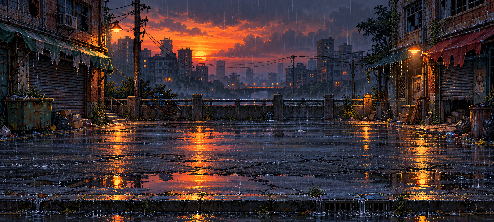
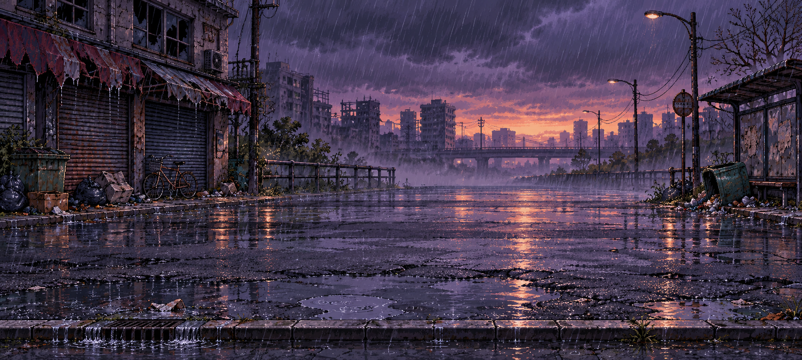
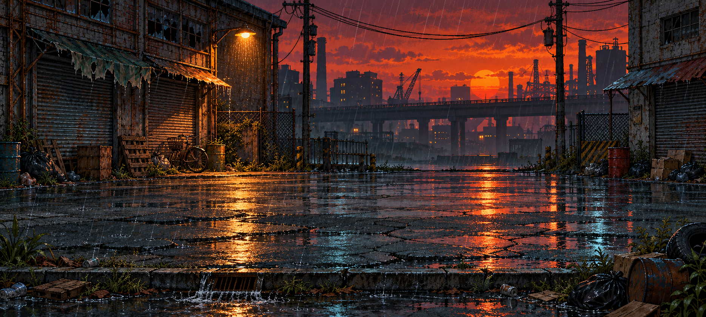
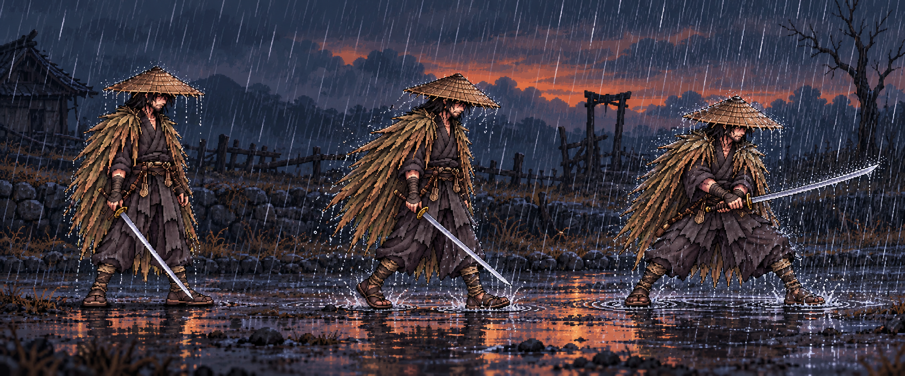

三版均为废弃路边街道：破败建筑、垃圾杂物、积水反光与黄昏降雨。中央保留作战区域。点击图片可查看原图。
橙色夕阳与冷蓝积水，老街住宅和暖色路灯，画面层次清晰。

紫灰黄昏、斜风大雨和低处水雾，更压抑、荒凉。

废弃厂房、高架路、锈蚀铁门与散落垃圾，夕阳对比强烈。

斗笠边缘滴水、蓑衣和衣摆湿润、鞋底溅水与水面涟漪。此图用于确定雨水与角色接触的表现，不是最终背景。

以上由内置imagegen生成，当前作为候选概念图。游戏场景尚未替换。选定后再接入Three.js动态降雨、角色接触雨滴与脚下溅水。